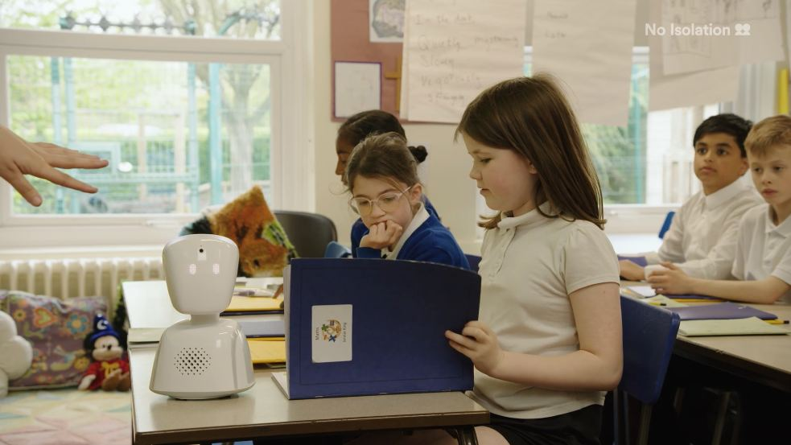
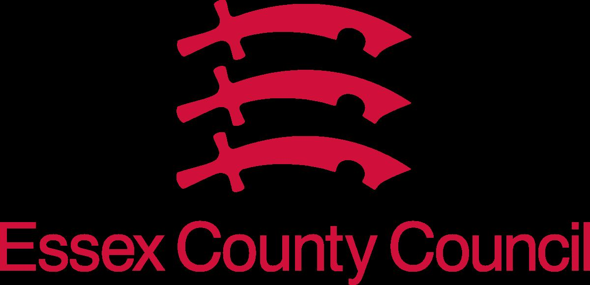
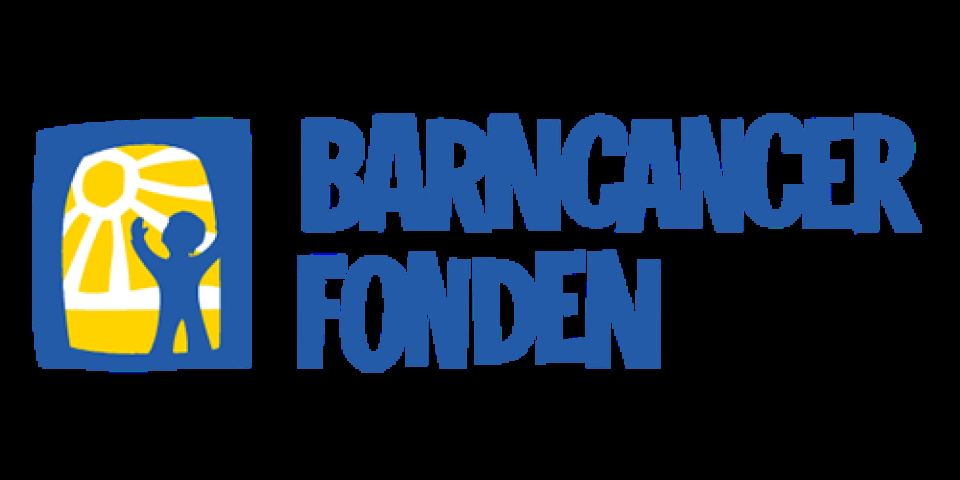

Manufacturing
Manufacturing
AV1 is a transformational solution for attendance and reintegration. School absence puts unsustainable pressure on the education system, our technology helps education providers meet their statutory duties in a cost- and resource-effective way, while ensuring inclusion, learning and belonging for every child.
School absence is one of the biggest challenges for the education system, leading to poorer educational outcomes and reduced life opportunities for affected students. It also puts severe pressure on the budgets and resources of local authorities as more and more students require costly individual support. Traditional approaches are unable to address this issue as they rely in resource-intensive, one-to-one intervention. Technology offers a fundamental shift by addressing the problem at scale, as is the case in other parts of society. Our AV1 solution combines technology and expertise to uniquely provide transformational value.
• AV1 is a scalable and resource-efficient way to meet statutory obligations to ensure education for every child. • AV1 facilitates inclusion, learning and belonging to children, bringing 4 of 5 users of the solution back to school.
A camera and microphone connect absent pupils who can speak, see and hear everything through the robot. The camera is one-way, which removes the pressure of being seen for children who are ill, anxious or in pain.



Kort fortalt: hva trenger du?
Beskriv saken, så svarer vi med hva det krever og hva det koster.